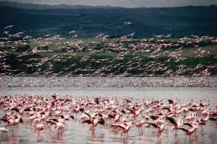
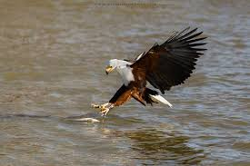
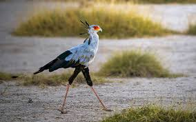
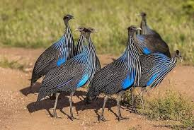
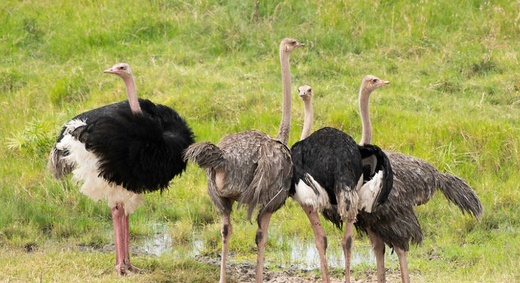
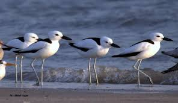

Discover Kenya's incredible bird diversity - home to over 1,100 bird species

Famous for millions of flamingos and over 450 bird species including pelicans, cormorants, and eagles.

Freshwater lake with over 400 bird species. Perfect for boat rides and walking safaris to see herons, kingfishers, and African fish eagles.

Over 420 bird species including raptors, water birds, and savannah species. Great for combining with elephant viewing.

Home to unique northern species including Somali ostrich, vulturine guineafowl, and various raptors.

Over 470 bird species including secretary birds, vultures, eagles, and numerous grassland species.

Mombasa, Malindi, and Watamu offer coastal bird watching with species like crab plovers, terns, and various seabirds.
Essential for spotting birds at a distance without disturbing them
Carry a bird identification book for accurate species recognition
Blend in with the environment to avoid scaring birds away
Best time for bird watching - birds are most active at dawn